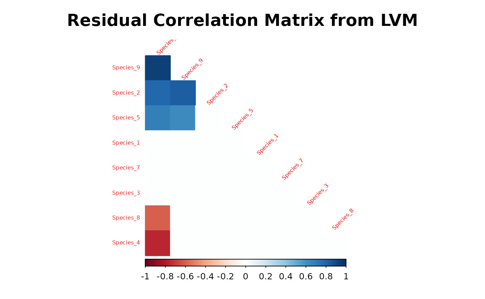
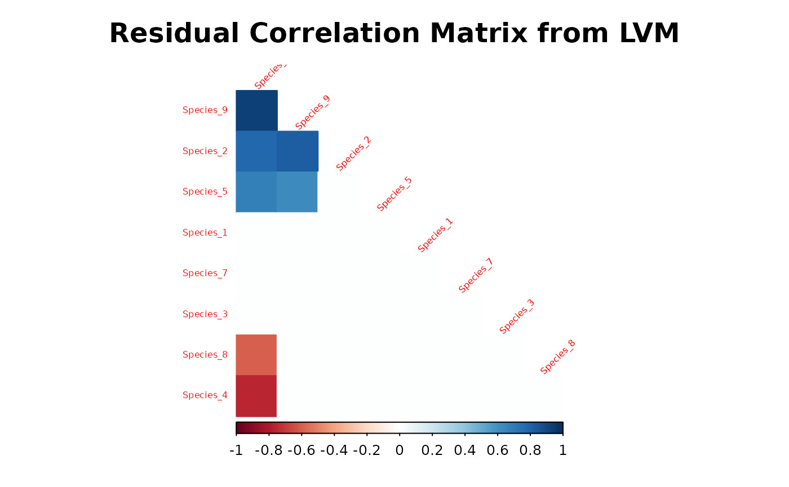

Plot the residual correlation matrix from a latent variable model (LVM).
Source:R/plot_residual_cor.R
plot_residual_cor.RdPlot the posterior mean estimator of residual correlation matrix reordered by first principal component using corrplot function from the package of the same name.
plot_residual_cor(
mod,
prob = NULL,
title = "Residual Correlation Matrix from LVM",
diag = F,
type = "lower",
method = "color",
mar = c(1, 1, 3, 1),
tl.srt = 45,
tl.cex = 0.5,
...
)Arguments
- mod
An object of class
"jSDM".- prob
A numeric scalar in the interval \((0,1)\) giving the target probability coverage of the intervals, by which to determine whether the correlations are "significant". If
prob=0.95is specified only significant correlations, whose \(95\%\) HPD interval does not contain zero, are represented. Defaults toprob=NULLto represent all correlations significant or not.- title
Character, title of the graph.
- diag
Logical, whether display the correlation coefficients on the principal diagonal.
- type
Character, "full" (default), "upper" or "lower", display full matrix, lower triangular or upper triangular matrix.
- method
Character, the visualization method of correlation matrix to be used. Currently, it supports seven methods, named "circle" (default), "square", "ellipse", "number", "pie", "shade" and "color".
- mar
See
par- tl.srt
Numeric, for text label string rotation in degrees, see
text.- tl.cex
Numeric, for the size of text label (variable names).
- ...
Further arguments passed to
corrplotfunction
Value
Displays a reordered correlation matrix
References
Taiyun Wei and Viliam Simko (2017). R package "corrplot": Visualization of a Correlation Matrix (Version 0.84)
Warton, D. I.; Blanchet, F. G.; O'Hara, R. B.; O'Hara, R. B.; Ovaskainen, O.; Taskinen, S.; Walker, S. C. and Hui, F. K. C. (2015) So Many Variables: Joint Modeling in Community Ecology. Trends in Ecology & Evolution, 30, 766-779.
Examples
library(jSDM)
# frogs data
data(frogs, package="jSDM")
# Arranging data
PA_frogs <- frogs[,4:12]
# Normalized continuous variables
Env_frogs <- cbind(scale(frogs[,1]),frogs[,2],scale(frogs[,3]))
colnames(Env_frogs) <- colnames(frogs[,1:3])
# Parameter inference
# Increase the number of iterations to reach MCMC convergence
mod<-jSDM_binomial_probit(# Response variable
presence_data = PA_frogs,
# Explanatory variables
site_formula = ~.,
site_data = Env_frogs,
n_latent=2,
site_effect="random",
# Chains
burnin=100,
mcmc=100,
thin=1,
# Starting values
alpha_start=0,
beta_start=0,
lambda_start=0,
W_start=0,
V_alpha=1,
# Priors
shape=0.1, rate=0.1,
mu_beta=0, V_beta=1,
mu_lambda=0, V_lambda=1,
# Various
seed=1234, verbose=1)
#>
#> Running the Gibbs sampler. It may be long, please keep cool :)
#>
#> **********:10.0%
#> **********:20.0%
#> **********:30.0%
#> **********:40.0%
#> **********:50.0%
#> **********:60.0%
#> **********:70.0%
#> **********:80.0%
#> **********:90.0%
#> **********:100.0%
# Representation of residual correlation between species
plot_residual_cor(mod)
 plot_residual_cor(mod, prob=0.95)

plot_residual_cor(mod, prob=0.95)
